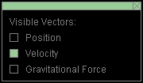
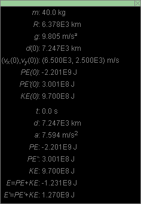
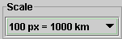
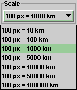
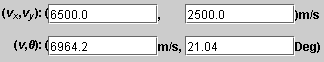
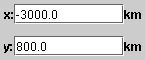
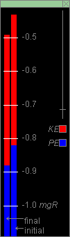

There are four basic control buttons. They are, from left to right:
-
 Rewind. Resets the simulation to the
initial position with the previously chosen initial
values. If you have the particle path displayed, Rewind
will allow you to compare paths traversed under
different conditions, e.g., different initial
velocities.
Rewind. Resets the simulation to the
initial position with the previously chosen initial
values. If you have the particle path displayed, Rewind
will allow you to compare paths traversed under
different conditions, e.g., different initial
velocities.
After clicking Rewind, click Play to restart the motion.
-
 Play/Pause. Starts the motion.
Play/Pause. Starts the motion.
After Play has been clicked, the button will change into the Pause button
 .
.
Clicking Pause will freeze the motion. To resume the motion, click Play once more.
-
 Step. Lets you step through the motion in equal
time steps.
Step. Lets you step through the motion in equal
time steps.
-
 Reset. Resets the applet to its default
setting.
Reset. Resets the applet to its default
setting.
Adjustments in the initial conditions can only be made after first clicking REWIND or RESET.


Displays or hides the satellite's or projectile's path in cyan. The path remains visible at all scale settings (see "8. Scale" below), except when the scale is such that the path is outside of the applet window.
The path is not erased when you click the Rewind button.

Displays an x,y coordinate grid that makes it easier to judge the satellite's or projectile's position. The x-axis points to the right and the y-axis points upward. The origin of the grid is at the very top of the earth's image.
The grid's scale divisions change with the scale setting.

This toggle button displays or hides the Vector Panel shown below on which you can select the vectors that you want to have displayed. Only one vector, the velocity, is selected in the Vector Panel shown below. This corresponds to what is shown in the image at the top of this Help document.
Three vectors can be displayed: Position in cyan, Velocity in magenta, and Gravitational Force in green.



Displays or hides the draggable Data box shown above as well as the draggable Energy box. The latter, which shows energy bars, can be seen in the picture at the top of this Help document. Information about the Energy box is provided in Point 11 below. The Data box displays the following information:
- m: mass of the satellite
- R: radius of the earth
- g: magnitude of the acceleration due to gravity at the surface of the earth
- d(0): initial distance of the satellite (or projectile) from the center of the earth
- (x(0),y(0)): initial position of the satellite (or projectile) relative to an origin at "the top" of the applet image of the earth
- (vx(0),vy(0)): initial velocity of the satellite (or projectile)
- PE(0): initial potential energy of the satellite-earth or (projectile-earth system) where PE is defined so that PE = 0 when the satellite (or projectile) is at an infinite distance from the earth
- PE'(0): initial potential energy of the satellite-earth (or projectile-earth) system where PE is defined so that PE = 0 when the satellite (or projectile) is at the surface of the earth
- KE(0): initial kinetic energy of the satellite (or projectile)
- t: time elapsed since the beginning of the motion
- d: distance of the satellite (or projectile) from the center of the earth at time t
- (vx,vy): velocity of the satellite or projectile at time t
- PE: potential energy of the satellite-earth or (projectile-earth system) at time t where PE is defined so that PE = 0 when the satellite (or projectile) is at an infinite distance from the earth
- PE': potential energy of the satellite-earth (or projectile-earth) system at time t where PE is defined so that PE = 0 when the satellite (or projectile) is at the surface of the earth
- KE: kinetic energy of the satellite (or projectile) at time t
- E = PE + KE: mechanical energy of the satellite-earth (or projectile-earth) system with PE defined as above
- E' = PE' + KE: mechanical energy of the satellite-earth (or projectile-earth) system with PE' defined as above

The Energy box (see Point 11 below) displays the potential
and kinetic energies of the satellite-earth (or
projectile-earth) system. The box displays two energy bars,
labeled "initial" and "final". The bar labeled "final" shows
the instantaneous potential and kinetic energies. The bar
labeled "initial" represents a fixed set of potential and
kinetic energies. By pressing the Initial button , one
causes the "initial" energy bar to represent the potential
and kinetic energies at that moment. When subsequently the
motion is played, the "initial" energy bar will continue to
display the initial energies while the "final" bar will keep
changing throughout the motion to represent the potential
and kinetic energies at any given moment during the motion.
Being able to set the "initial" bar before starting the motion allows comparison of the energies at any moment during the motion with the initial energies.

When the Coordinates button is selected, clicking anywhere in the applet window will place a "+" marker at the point clicked and display the x,y coordinates of the point. This way you can measure the coordinates of a point. The point can be dragged to a new location as long as the mouse button is depressed. Double-clicking on a "+" will remove it, but only if the Point Coordinates button is selected at the time.

Seven distance scale settings are possible, from 100 pix = 10 km to 100 pix = 100,000 km. A scale setting is selected by pulling down the Scale menu (by clicking on the downward arrow) and selecting the setting from the choices on the menu displayed in the following image.

The length of the magenta arrow representing the velocity varies with different scale settings. Of course, the length of the cyan arrow representing the position vector varies as well with the scale setting. However, the green vector representing the gravitational force acting on the projectile or satellite has the same length at all scale settings.

Four data entry fields are provided for setting the initial velocity, two in the top row for the x and y components of the velocity, and two in the bottom row for the magnitude v and the direction angle θ of the velocity. θ is measured in the positive sense relative to the positive x-axis.
After typing new values into one or two of the fields, hit ENTER to make them effective.
During the motion, these entry fields are constantly being updated and show the current velocity.
When the velocity vector is displayed, the velocity can also be changed by dragging the tip of the velocity vector. However, the Coordinates button should be deselected, because otherwise clicking on the tip of the velocity vector will cause a "+" point marker to be placed there.

Two data entry fields are provided for setting the initial x and y position coordinates of the satellite or projectile.
After typing new values into one or two of the fields, hit ENTER to make them effective.
During the motion, these entry fields are constantly being updated and show the current position.
The position of the projectile or satellite can also be changed by dragging the position or satellite, provided the Coordinates button is not selected. If the Coordinates button is selected, clicking on the projectile or satellite will cause a "+" point marker to be placed there.

When the Data button is selected, two draggable information boxes are displayed. One of them is the Energy box shown above. The other one is the Data box. You may close either box by clicking the "X" in the top right corner of the box. This will not close the other box.
The Energy box displays two energy bars, labeled "initial" and "final". Both bars represent the potential energy PE of the satellite-earth (or projectile-earth) system (in blue) and the kinetic energy KE of the system in red.
The bar labeled "final" shows the instantaneous energies
during the motion and also while the initial position and
velocity are being set. The bar labeled "initial" does not
change during the motion. It can be made to represent the
energies corresponding to the initial setting of position
and velocity by pressing the Initial button
before pressing PLAY. That way the "initial" bar will show
the potential and kinetic energies at the time the Initial
button is pressed and will allow comparison of these
energies with the instantaneous energies during the motion.
By dragging the short horizontal bar across the vertical Zoom bar on the right in the Energy box up or down, you can change the scale of the energy bars. Changing the energy scale is necessary to be able to bring the top end of the energy bars into view for certain values of the potential and kinetic energies.
Note that the level of the potential energy value at PE = -mgR is held fixed during these scale changes. This is the value of the potential energy PE when the satellite (or projectile) is at the surface of the earth.